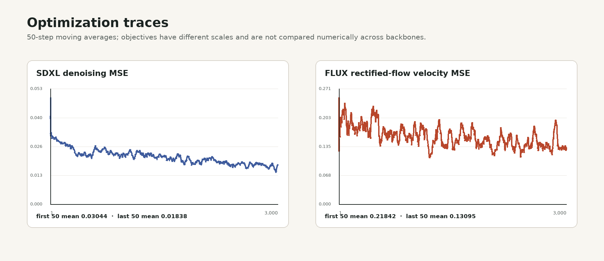
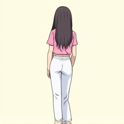
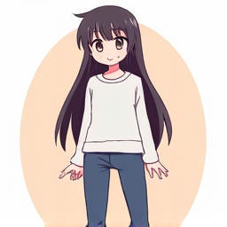

Mean, steps 1–500.03044
Mean, steps 2,951–3,0000.01838
Minimum observed0.00256
Controlled backbone study · KMS v389 · Random seed 42
We test whether jointly optimized item-token embeddings recover unseen hat–top–bottom combinations. The final FLUX sampling pass removes the game-specific prefix and uses a direct anime-style prompt on the same factorial renders, split, and sample seeds.
The new outputs are recognizable anime characters rather than icons or empty frames, but they do not reproduce the requested hat, top, and bottom. CLIP increases only from 0.4537 to 0.4642, while foreground IoU decreases to 0.0503 and LPIPS increases to 0.5015. Prompt wording alone does not repair the failed item binding.
01 / Experimental setup
A pinned MapleStory.IO KMS snapshot supplies ten hats, ten tops, and ten bottoms. We render the complete 10×10×10 Cartesian product while holding character identity, pose, canvas, and background fixed. The exact rendered files and split are reused for both backbones.
Dataset manifest SHA-256
e2e1842de5a7c94073b171397ea760d1b6c6f57cb01a0970d2798f2483472ae5
02 / Optimization
Each model receives 30 new identifiers. Only the corresponding embedding rows are retained after an optimizer update; the VAE, denoiser or transformer, text-encoder backbones, and all non-item embedding rows remain unchanged. LoRA is not used in either condition.
| Optimization property | SDXL textual inversion | FLUX textual inversion |
|---|---|---|
| Base model revision | SDXL 1.0 · 4621659…e94a7b | FLUX.1-dev · 3de623f…f2eb21 |
| Text encoders | CLIP-L + CLIP-G | CLIP-L + T5 |
| Effective parameters | 61,440 | 145,920 |
| Objective | Denoising MSE | Rectified-flow velocity MSE |
| Optimizer / schedule | AdamW / constant | AdamW / constant |
| Learning rate | 5 × 10−4 | 5 × 10−4 |
| Steps / batch / precision | 3,000 / 4 / BF16 | 3,000 / 4 / BF16 |
| LoRA | Not used | Not used |
| Wall-clock time | 15.18 min | 86.89 min |
| Peak allocated CUDA memory | 9.11 GiB | 40.57 GiB |

03 / Evaluation
We freeze the completed FLUX embeddings and change only the inference prompt. The same 100 held-out combinations and seeds are sampled with 30 inference steps, guidance 3.5, and no negative prompt.
An identical target copy verifies pairing and the expected metric upper bound.
A different real render measures similarity caused by the shared body, pose, and background.
The completed embedding run sampled with the original training-caption prompt.
The same frozen embeddings sampled with an anime-style character wearing {tokens}.
Result. The anime-style prompt produces coherent anime characters, but it does not recover the requested item identities. Relative to the original FLUX prompt, CLIP changes from 0.4537 to 0.4642, foreground IoU falls from 0.0631 to 0.0503, and LPIPS rises from 0.4332 to 0.5015. The prompt changes style rather than binding.
| Evaluation source | Pixel similarity ↑ | Foreground IoU ↑ | CLIP ↑ | LPIPS ↓ |
|---|---|---|---|---|
| Oracle exact-match control | 1.0000 | 1.0000 | 1.0000 | 0.0000 |
| Shuffled real-image control | 0.9903 | 0.7559 | 0.7257 | 0.0472 |
| SDXL textual inversion | 0.8761 | 0.1793 | 0.5809 | 0.3641 |
| FLUX original prompt | 0.9122 | 0.0631 | 0.4537 | 0.4332 |
| FLUX anime-style prompt | 0.8952 | 0.0503 | 0.4642 | 0.5015 |
Every card shows the held-out target and the newly sampled FLUX image. Ground-truth sprites are magnified 2.4×; generated images remain uncropped. Select either image to open its complete 256×256 source.
Exact prompt template: an anime-style character wearing {tokens}
FLUX sampling: guidance 3.5 · 30 steps · no negative prompt · seeds 43–142
an anime-style character wearing <bottom_1060001> <hat_1000001> <top_1040002>

an anime-style character wearing <bottom_1060007> <hat_1000000> <top_1040001>an anime-style character wearing <bottom_1060001> <hat_1000005> <top_1040008>an anime-style character wearing <bottom_1060008> <hat_1000009> <top_1040000>an anime-style character wearing <bottom_1060001> <hat_1000007> <top_1040005>

an anime-style character wearing <bottom_1060004> <hat_1000009> <top_1040004>
The sheet contains four rows from each source, with the target on the left and comparison on the right.
Each label reports source, sample index, pixel similarity, foreground IoU, and CLIP.

04 / Discussion
The requested prompt now produces the intended anime visual domain, confirming that sampling itself is responsive. However, the generated garments are generic and do not correspond to the learned identifiers. The next intervention must change supervision or trainable capacity rather than adding more style words.
Evaluation limitation. CLIP and LPIPS are computed over the complete normalized image, without item-specific masks. Category-conditioned summaries are therefore not localized garment measurements.